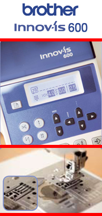
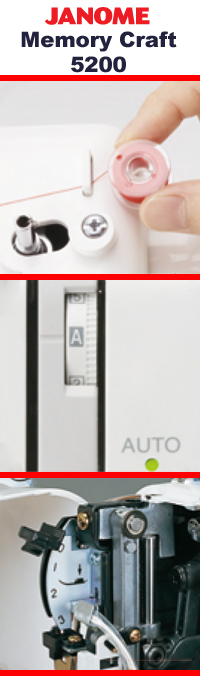
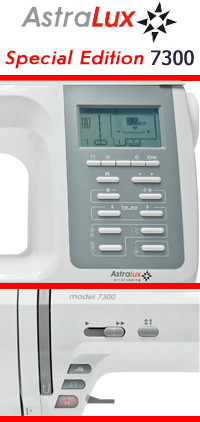
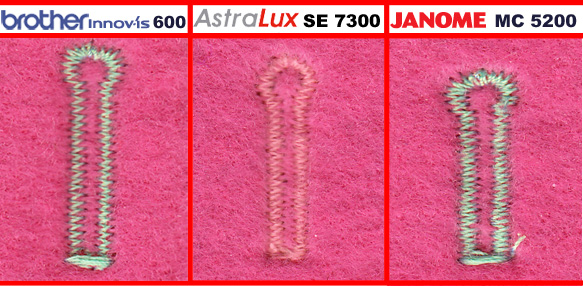

|
Доброго Вам времени суток! В этом, ставшем уже традиционным, обзоре мы рассмотрим три швейных машины. Все машинки обладают огромным количеством строчек, горизонтальным челноком и хорошими эргономическими данными. В этот раз, к уже довольно известным брендам в наших обзорах Janome и Brother, примкнул Astralux. Такие модели как Memory Craft 5200, Brother Innovis 600 и Astralux 7300 SE. Рассмотрим каждую машинку в отдельности. |
|  |
Внешнее изящество, необычные умения и дополнительные гаджеты - все это воплощено в Brother NV 600.Что хочется отметить сразу, так это великолепную комплектацию и внешний вид швейной машины. В комплект с Brother NV 600 производитель дает нам огромный ассортимент швейных спецпринадлежностей, дополнительный столик и коленоподъемник. Что касается дизайна, то тут и говорить нечего, имя Brother уже давно впереди планеты всей. Чёткие линии, огромное поле шитья, бесшумная работа всех механизмов - это только видимые достоинства этого аппарата. Нельзя пройти мимо чудо- способностей шестисотой модели. Это единственная швейная машина, умеющая шить в четырех направлениях. Она обладает системой drop-in, которая, в свою очередь, упрощает заправку нижней нити. Ну и наконец - светодиодная подсветка, многообразие классических операций. Правда, опробовав швейную машину Brother NV 600 видно, что часть плюсов плавно перетекают в минусы. Например, её возможность шитья во всех направлениях. Тут история понятна, из-за увеличенных прорезей в игольной пластине при обработке тонких капризных материалов под сегменты рейки может попасть ткань, что приведет к некорректной работе нижнего транспортера. Также есть нарекания к машине по качеству выполнения декоративных строчек, это следует из того, что машина не является вышивальной техникой. |
Пришла очередь рассмотреть флагман-линейку Janome Memory Сraft 5200. Её представительница модель 5200. Чтобы охарактеризовать её, достаточно одного слова - «классика». Округлые формы, огромный монохромный дисплей, 504 операции - все, что необходимо для работы. В данной машине присутствует уникальная система, которая не позволит забиться тонким материалам под игольную пластину. Для этого на игольной пластине выполнен разрез, в который входит спецпластина, после этого отверстие в игольной пластине изменяется, вместо эллипсоидной формы на круглую всего лишь в 1,5-1,7 раза больше диаметра иглы. Правда, комплектация немного подкачала - набор лапок очень хорош, также есть и верхний транспортёр, но отсутствует коленоподъёмник и приставной столик, который позволяет значительно увеличить поле шитья. Как в любой машине нас больше интересуют не только плюсы, но и минусы. Взглянем на машину поближе: игольная пластина не имеет стабилизирующей планки, это может повлиять в дальнейшем на плоскостность этой же пластины, что даст дополнительные складки на обрабатываемом материале. За подсветку у машины отвечает лампа накаливания, в такой современной машине и такой устаревший аксессуар, который потребляет уйму энергии, греется, постоянно перегорает, да и цоколь нестандартный - придётся заказывать в сервис центре. |
 |
|  |
На арену выходит тёмная лошадка Astralux 7300 SE. Дизайн, мягко говоря, не прельщает - линии округлы, плавны, но чего-то не хватает: неудобная крышка, которая постоянно падает сама, кнопки на панели ничем не обозначены: без инструкции трудно будет разобраться. Отсутствие жёсткого чехла также неутешительно. Теперь взглянем на рабочие составляющие: игольная пластина великолепно исполнена - имеет стабилизирующую планку, что не позволит ей изменить свою плоскостность в процессе работы. Подсветка светодиодная - большой плюс в современной машине. Нижняя рейка удивляет - имеет семь сегментов, двухрядное деление зубьев и по ширине она более 18 мм, я думаю, что она ещё покажет себя в деле. На дисплее точно отображаются виды швов, что удобно при выборе операций. Порадовали практичные кнопки управления - очень удобно и четко происходит нажатие. Регулировка скорости шитья происходит плавно, а не имеет 3 положения скорости, как у предыдущих испытуемых. Конечно же, огромная комплектация из 14 лапок и комплектующих. |
|
Берём тонкий шифон, вставляем в иголку № 60, нитку потоньше и «поехали»: Brother NV 600 – прошила, немного подтянуло, но на бытовом уровне вполне прилично, учитывая тот фактор, что машина имеет электронное натяжение нити и в ручную очень сложно попасть в баланс с нижней нитью. Janome Memory Craft 5200 – этот тест должен быть коньком этой машины. Все те же условия, но напоминаю – у неё есть конёк для прошивания тонких материалов пластина, которая закрывает отверстие в игольной пластине. Прошила она хорошо, без стягивания, всё чётко, но чуть-чуть подтянуть натяжение и все будет отлично, до качества промышленной машины, конечно же, не дотягивает, строчка немного под углом но качество очень приличное. Пятёрка с минусом. Astralux 7300, настройки те же, конечно нет пресловутой пластины, но зато семисегментная рейка, я думаю, сделает своё дело. Регулятор натяжения стоит на автомате. Прошиваем - отлично, ничуть не хуже чем у Janome, также необходимо чуть-чуть отрегулировать натяжение нити. Стежок к стежку всё ровно. В этом тесте все машины показали себя с очень хорошей стороны, но это и понятно машины из добротного сегмента. |
|
Проводим тест на двух типах материалов: на плотном и на тонком. Выполняем самую сложную петлю с глазком.
Результаты: Brother NV 600 на тяжёлом материале - всё великолепно и добротно, можно легко выполнять петли даже на пальто. Но на тонком материале стянуло и подмяло – сразу могу сказать, необходимо ставить стабилизирующую пластину. Janome 5200 - качество на разных материалах по затяжке петли абсолютно одинаковое – ничего не стянуто, не собрано, но глазок какой-то не круглый, а приплюснутый. Как декоративную петлю я бы не использовал. Astralux 7300 - вот здесь могу сказать «идеал», сам не ожидал, четко ровно, стежок раздельный. Глазок имеет форму круга, а не эллипса. Очень рад. |
|  |
|
Ну и ставший уже традиционный тест на беспрерывную работу. Включаем всех испытуемых на максимальной скорости.
Включаем всех испытуемых на максимальной скорости.
|
Вывод: Все испытуемые модели показали себя с очень интересной стороны. Некоторые модели прекрасно ведут себя с тончайшими материалами, некоторые имеют идеально чёткую траекторию строчки, некоторые максимально удобны для пользования. Практически все модели стремятся совместить в себе все эти качества – практически у всех это получилось, у кого-то в большей степени или в меньшей. Если встал выбор покупки между этими тремя моделями, то я бы распределил пальму первенства следующим образом. Третье место я бы отдал Janome Memory Craft 5200 – машина хорошо себя показала во всех тестах, но в каждом требовалась, какая-то дароботка, регулировка, настройка – вспоминается старая добрая чайка, которая шьёт хорошо, но хочется большего, хотя куда больше. Второе почётное место занимает швейная машина Brother nv 600, которая покорила своим дизайном, никем неповторимыми изюминками в шитье. Если Вы хотите быть всегда на шаг впереди всех, то эта Ваша машина. Результаты в шитье она показала также приличные. Лидерство взяла швейная машина Astralux 7300 SE – на первый взгляд неказистый дизайн, тяжёлый вес, отсутствие дополнительного столика, записала машину в аутсайдеры, но посмотрев на результаты шитья мы просто удивились. Чёткий ровный стежок, как у промышленной машины. Корни японского завода HAPPY дали о себе знать. Данной машине ставлю пять балов. Каждый найдёт что-то свое в этих машинах
В данной статье мы провели сравнение швейных машинок Brother NV 600, Janome Memory Сraft 5200 и Astralux 7300 SE. Получить информацию о сравнении других швейных машин вы можете на странице «обзоры». Сайт регулярно обновляется и дополняется новыми обзорами, не пропустите!